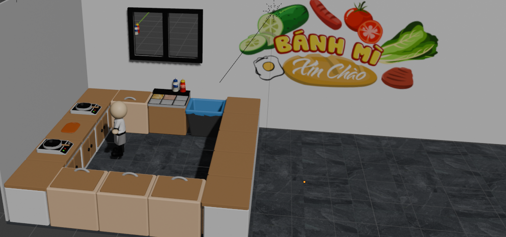

Bánh Mì Xin Chào ●
- Management
- Simulation
- Mobile
A cooking and time-management game focused on preparing Vietnamese street food in a high-pressure kitchen — designed for mobile with a full live-ops economy.
CULINARY CHAOS
Cultural Integration: Inspired by the frantic energy of Overcooked!, Bánh Mì Xin Chào brings Vietnamese street food culture to the management simulation genre. The goal was to capture the authentic, high-pressure environment of a street vendor, translating the real-world chaos of handling multiple complex orders into a highly engaging, time-management game loop.


3.1 Core Loop & System Design
RESOURCE MANAGEMENT & COGNITIVE LOAD
The core gameplay revolves around the Order → Prep → Serve cycle. The system is designed to test the player's multitasking bandwidth. Each customer has a visible 'Patience Bar' that acts as a strict timer. As orders become more complex, the player's cognitive load increases, forcing them to make rapid trade-off decisions on which orders to prioritize and which to sacrifice.
3.2 Level Design Flow & Pacing
THE "U-SHAPED" KITCHEN FLOW
Across the 10+ levels, spatial layout is my primary tool for difficulty balancing. The optimal kitchen design features a U-shaped layout, allowing for smooth action chains if the player establishes a rhythm (The Flow State). However, in later levels, I intentionally disrupted this layout—separating ingredients from cooking stations—to physically increase travel time and break the player's established rhythm.


3.3 UI/UX Breakdown
Every screen was designed in Figma with a 3-tap rule: any key action (order, upgrade, retry) must be reachable in ≤3 taps. The color system uses Vietnamese flag red/yellow as accent to reinforce the cultural theme without clashing with game UI.


3.4 Monetization & Economy
MONETIZATION WITHOUT INTERRUPTION
A key responsibility was integrating ads without breaking player immersion. Instead of forced interstitials, I tied monetization directly to the game's difficulty spikes. When a player fails a level due to time running out (**The Chaos Moment**), a Rewarded Ad is offered to extend the timer. This places the ad at the exact moment of highest player investment, turning a monetization tactic into a perceived "lifeline."

WHAT DIDN'T WORK
Early levels had 6 available stations simultaneously — playtests showed new players were overwhelmed in the first 30 seconds. Redesigning levels to introduce one station per level dramatically improved the onboarding funnel.
WHAT WORKED WELL
The "Rewarded Ad at fail state" integration was seamless — 70% of simulated players chose the free continue over restarting. This validates the LiveOps hook as a strong retention lever.